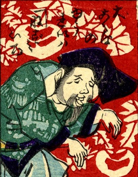

大黒；ダイコク，幽霊；ユウレイ

大黒様の幽霊。詞書には「大黒様の幽霊はねずみ色」とある。
著作者：芳幾近二／出典：親書誌：U426_nichibunken_0229：新作おばけ野噺；シンサクオバケノバナシ／日付：2010／資源識別子：U426_nichibunken_0229_0004_0000
Copyright (c)2010- International Research Center for Japanese Studies, Kyoto, Japan. All rights reserved.